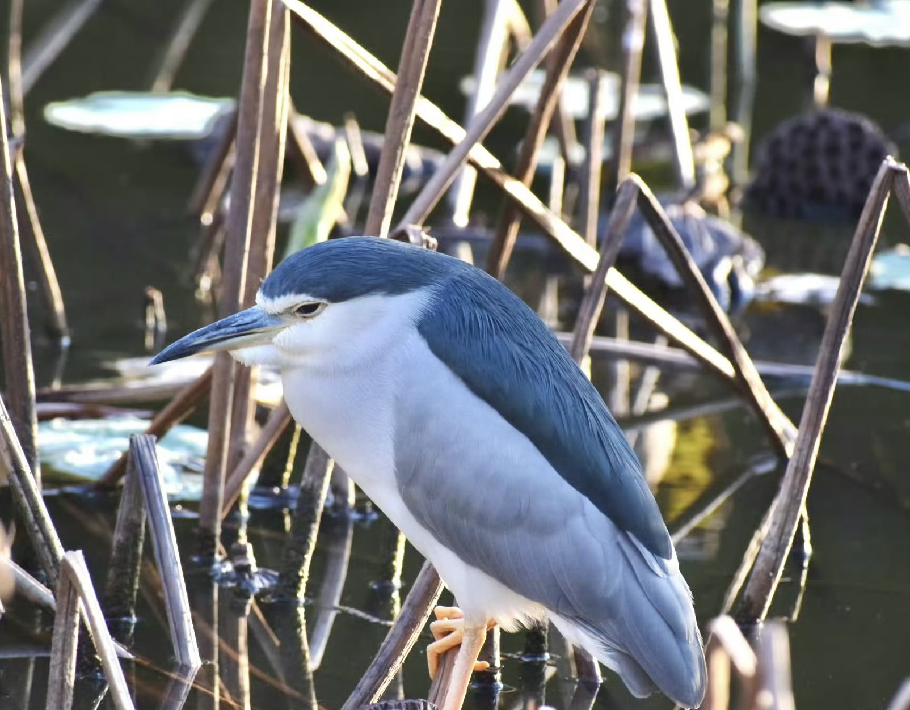
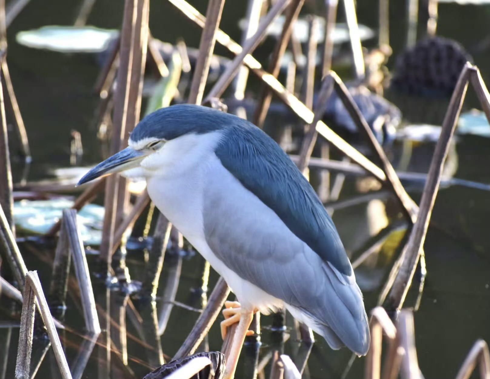

夜鹭（学名：Nycticorax nycticorax）是中型涉禽，体长46-60厘米。体较粗胖，颈较短；嘴尖细，微向下曲，黑色；胫裸出部分较少，脚和趾黄色；头顶至背黑绿色而具金属光泽；上体余部灰色；下体白色；枕部披有2-3枚长带状白色饰羽，下垂至背上，极为醒目。 栖息和活动于平原和低山丘陵地区的溪流、水塘、江河、沼泽和水田地上。夜出性。喜结群。主要以鱼、蛙、虾、水生昆虫等动物性食物为食。分布于欧洲大陆、非洲、马达加斯加，往东经小亚细亚、印度、印度尼西亚、亚洲中部、南部，一直到俄罗斯远东滨海边疆区、朝鲜和日本。